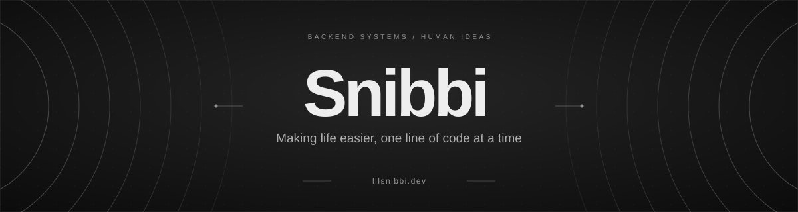
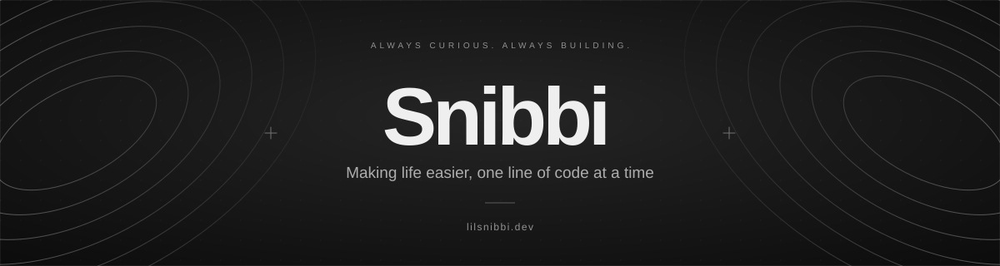
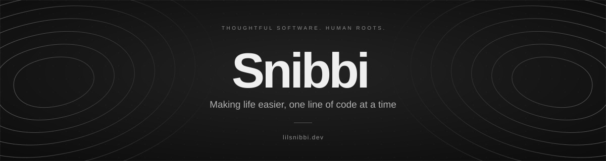
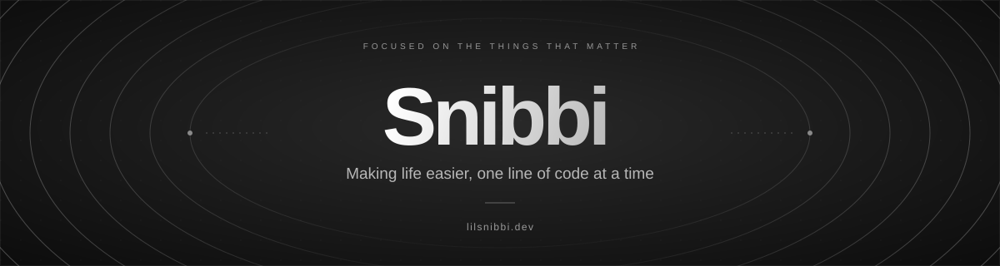
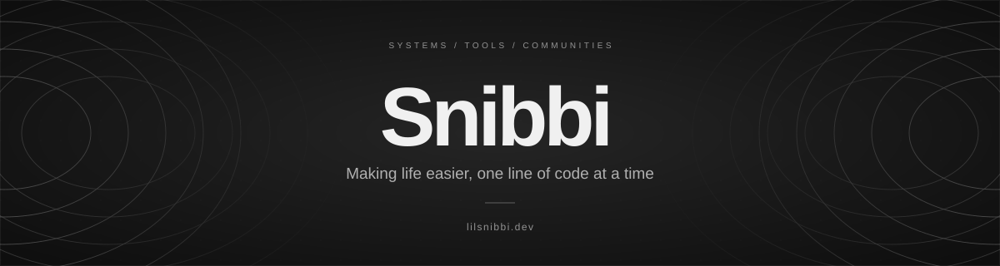
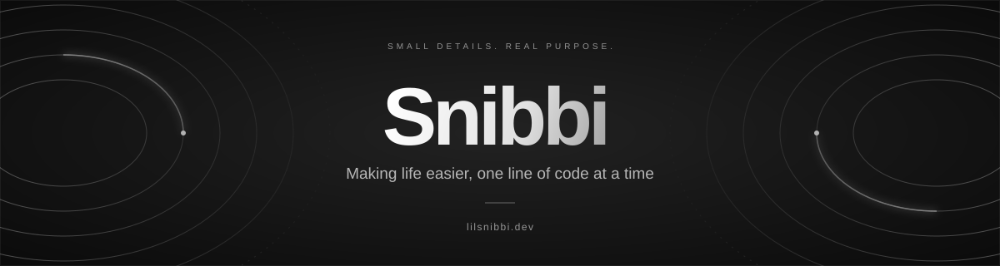

11 Echo
Open SVGClosest to your original pick. A softer fade, silver lettering, and a little more breathing room.
10 variations on #10
1200 × 320 px
Monochrome / SVG
Your favorite layout, explored further. Soft contours, a centered name, and your motto: Making life easier, one line of code at a time
.
Closest to your original pick. A softer fade, silver lettering, and a little more breathing room.

A wider orbit. Large, cropped circles make the same layout feel more architectural.
Gently squared contours. A subtle nod to the rounded panels in Keyzori and bamu.
Longer, lower ripples. A horizontal rhythm that leans into the slim banner shape.

A little movement at the edges. Mirrored, tilted orbits around a calm center.

More organic, less mechanical. Contours with the gentle irregularity of a topographic map.

The two sides become one. A single, broad halo puts the name at the center of everything.

A more intricate signal. Overlapping waves add texture without crowding the typography.

A touch of light. Selected arcs catch a faint silver glow against a deeper charcoal background.
The most restrained option. Three spacious contours, a larger name, and a smooth background.